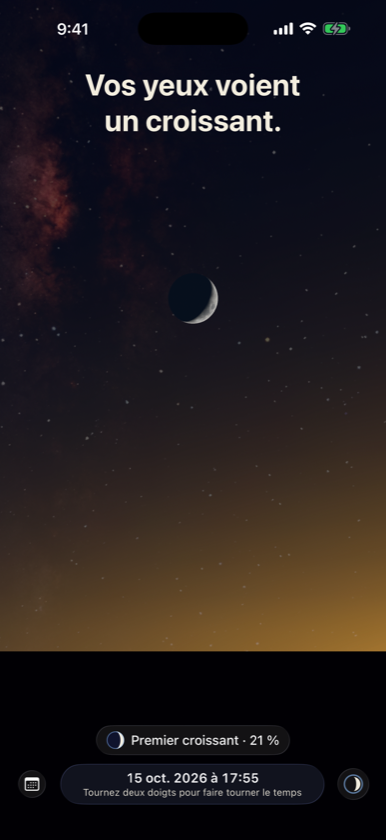
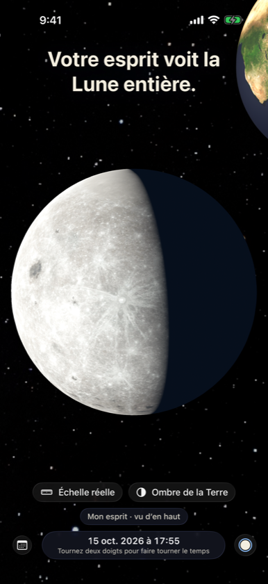
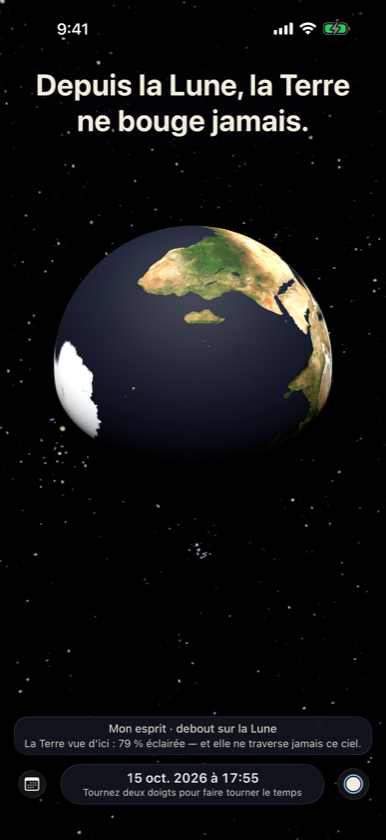

Vos yeux voient un croissant. Votre esprit sait que la Lune n’en est jamais un. Two Egoes est un ciel continu où vous pouvez vous tenir n’importe où — votre horizon, la Lune, le Soleil, ou tout là-haut.



Debout sur la Lune
La Terre reste immobile dans le ciel lunaire, avec des phases inverses de celles de la Lune.
Pourquoi pas chaque mois ?
L’ombre de la Terre à la distance de la Lune, en vraies proportions, et l’inclinaison de 5° qui décide de chaque éclipse.
Rien n’est immobile
Assis sur votre chaise, vous parcourez environ 30 km autour du Soleil chaque seconde.